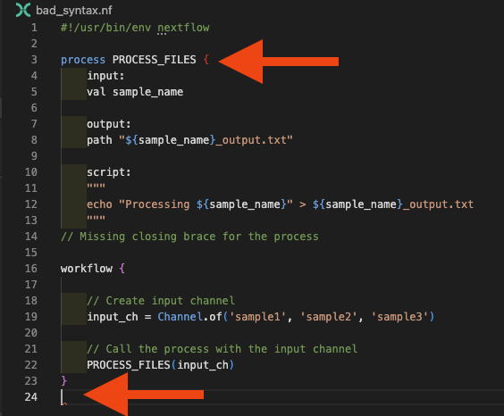
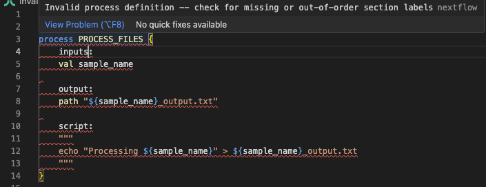
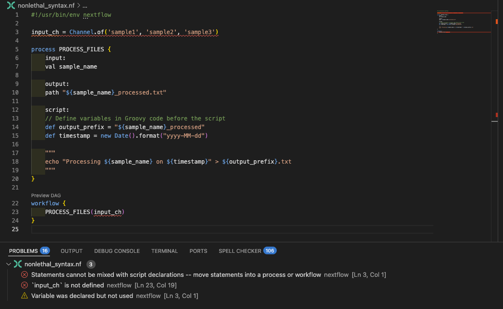
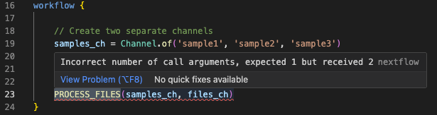

Debug dei Workflow¶
Traduzione assistita da IA - scopri di più e suggerisci miglioramenti
Il debug è una competenza critica che può farvi risparmiare ore di frustrazione e aiutarvi a diventare sviluppatori Nextflow più efficaci. Durante la vostra carriera, specialmente quando state iniziando, incontrerete bug durante la costruzione e manutenzione dei vostri workflow. Imparare approcci sistematici al debug vi aiuterà a identificare e risolvere i problemi rapidamente.
Obiettivi di apprendimento¶
In questa missione secondaria, esploreremo tecniche sistematiche di debug per i workflow Nextflow:
- Debug degli errori di sintassi: Utilizzo efficace delle funzionalità IDE e dei messaggi di errore di Nextflow
- Debug dei canali: Diagnosi dei problemi di flusso dati e dei problemi di struttura dei canali
- Debug dei processi: Investigazione dei fallimenti di esecuzione e dei problemi di risorse
- Strumenti di debug integrati: Utilizzo della modalità preview, stub running e directory di lavoro di Nextflow
- Approcci sistematici: Una metodologia in quattro fasi per un debug efficiente
Alla fine, avrete una metodologia di debug robusta che trasforma frustranti messaggi di errore in chiare roadmap per le soluzioni.
Prerequisiti¶
Prima di intraprendere questa missione secondaria, dovreste:
- Aver completato il tutorial Hello Nextflow o un corso per principianti equivalente.
- Essere a vostro agio nell'uso di concetti e meccanismi base di Nextflow (processi, canali, operatori)
Opzionale: Raccomandiamo di completare prima la missione secondaria Funzionalità IDE per lo Sviluppo Nextflow. Quella copre in modo completo le funzionalità IDE che supportano il debug (evidenziazione sintassi, rilevamento errori, ecc.), che useremo intensamente qui.
0. Iniziare¶
Aprire il codespace di formazione¶
Se non l'avete ancora fatto, assicuratevi di aprire l'ambiente di formazione come descritto in Configurazione Ambiente.

Spostarsi nella directory del progetto¶
Spostiamoci nella directory dove si trovano i file per questo tutorial.
Potete impostare VSCode per focalizzarsi su questa directory:
Rivedere i materiali¶
Troverete un insieme di workflow di esempio con vari tipi di bug che useremo per la pratica:
Contenuto della directory
.
├── bad_bash_var.nf
├── bad_channel_shape.nf
├── bad_channel_shape_viewed_debug.nf
├── bad_channel_shape_viewed.nf
├── bad_number_inputs.nf
├── badpractice_syntax.nf
├── bad_resources.nf
├── bad_syntax.nf
├── buggy_workflow.nf
├── data
│ ├── sample_001.fastq.gz
│ ├── sample_002.fastq.gz
│ ├── sample_003.fastq.gz
│ ├── sample_004.fastq.gz
│ ├── sample_005.fastq.gz
│ └── sample_data.csv
├── exhausted.nf
├── invalid_process.nf
├── missing_output.nf
├── missing_software.nf
├── missing_software_with_stub.nf
├── nextflow.config
└── no_such_var.nf
Questi file rappresentano scenari comuni di debug che incontrerete nello sviluppo reale.
Rivedere l'assegnazione¶
La vostra sfida è eseguire ogni workflow, identificare gli errori e correggerli.
Per ogni workflow con bug:
- Eseguire il workflow e osservare l'errore
- Analizzare il messaggio di errore: cosa vi sta dicendo Nextflow?
- Localizzare il problema nel codice usando gli indizi forniti
- Correggere il bug e verificare che la vostra soluzione funzioni
- Ripristinare il file prima di passare alla sezione successiva (usare
git checkout <filename>)
Gli esercizi procedono da semplici errori di sintassi a problemi di runtime più sottili. Le soluzioni sono discusse inline, ma provate a risolvere ognuno da soli prima di leggere avanti.
Checklist di preparazione¶
Pensate di essere pronti per iniziare?
- Comprendo l'obiettivo di questo corso e i suoi prerequisiti
- Il mio codespace è attivo e funzionante
- Ho impostato la mia directory di lavoro appropriatamente
- Comprendo l'assegnazione
Se potete spuntare tutte le caselle, siete pronti per iniziare.
1. Errori di Sintassi¶
Gli errori di sintassi sono il tipo più comune di errore che incontrerete quando scrivete codice Nextflow. Avvengono quando il codice non si conforma alle regole di sintassi attese del DSL Nextflow. Questi errori impediscono al vostro workflow di eseguire del tutto, quindi è importante imparare come identificarli e correggerli rapidamente.
1.1. Parentesi graffe mancanti¶
Uno degli errori di sintassi più comuni, e talvolta uno dei più complessi da debuggare è quello delle parentesi mancanti o non corrispondenti.
Iniziamo con un esempio pratico.
Eseguire il pipeline¶
Output del comando
Elementi chiave dei messaggi di errore di sintassi:
- File e posizione: Mostra quale file e quale riga/colonna contengono l'errore (
bad_syntax.nf:24:1) - Descrizione dell'errore: Spiega cosa ha trovato il parser che non si aspettava (
Unexpected input: '<EOF>') - Indicatore EOF: Il messaggio
<EOF>(End Of File) indica che il parser ha raggiunto la fine del file mentre ancora si aspettava più contenuto - un segno classico di parentesi graffe non chiuse
Controllare il codice¶
Ora, esaminiamo bad_syntax.nf per capire cosa sta causando l'errore:
Per gli scopi di questo esempio abbiamo lasciato un commento per mostrarvi dove si trova l'errore. L'estensione Nextflow per VSCode dovrebbe anche darvi alcuni suggerimenti su cosa potrebbe essere sbagliato, mettendo la parentesi graffa non corrispondente in rosso e evidenziando la fine prematura del file:

Strategia di debug per errori di parentesi:
- Usare la corrispondenza delle parentesi di VS Code (posizionare il cursore vicino a una parentesi)
- Controllare il pannello Problemi per messaggi relativi alle parentesi
- Assicurarsi che ogni
{di apertura abbia una}di chiusura corrispondente
Correggere il codice¶
Sostituire il commento con la parentesi graffa di chiusura mancante:
Eseguire il pipeline¶
Ora eseguite nuovamente il workflow per confermare che funzioni:
Output del comando
1.2. Uso di parole chiave o direttive di processo errate¶
Un altro errore di sintassi comune è una definizione di processo non valida. Questo può accadere se dimenticate di definire blocchi richiesti o usate direttive errate nella definizione del processo.
Eseguire il pipeline¶
Output del comando
N E X T F L O W ~ version 25.10.2
Launching `invalid_process.nf` [nasty_jepsen] DSL2 - revision: da9758d614
Error invalid_process.nf:3:1: Invalid process definition -- check for missing or out-of-order section labels
│ 3 | process PROCESS_FILES {
│ | ^^^^^^^^^^^^^^^^^^^^^^^
│ 4 | inputs:
│ 5 | val sample_name
│ 6 |
╰ 7 | output:
ERROR ~ Script compilation failed
-- Check '.nextflow.log' file for details
Controllare il codice¶
L'errore indica una "Invalid process definition" e mostra il contesto intorno al problema. Guardando le righe 3-7, possiamo vedere inputs: alla riga 4, che è il problema. Esaminiamo invalid_process.nf:
Guardando la riga 4 nel contesto dell'errore, possiamo individuare il problema: stiamo usando inputs invece della corretta direttiva input. L'estensione Nextflow per VSCode segnalerà anche questo:

Correggere il codice¶
Sostituire la parola chiave errata con quella corretta facendo riferimento alla documentazione:
Eseguire il pipeline¶
Ora eseguite nuovamente il workflow per confermare che funzioni:
Output del comando
1.3. Uso di nomi di variabili errati¶
I nomi delle variabili che usate nei vostri blocchi script devono essere validi, derivati o dagli input o da codice groovy inserito prima dello script. Ma quando state gestendo la complessità all'inizio dello sviluppo del pipeline, è facile fare errori nella denominazione delle variabili, e Nextflow ve lo farà sapere rapidamente.
Eseguire il pipeline¶
Output del comando
N E X T F L O W ~ version 25.10.2
Launching `no_such_var.nf` [gloomy_meninsky] DSL2 - revision: 0c4d3bc28c
Error no_such_var.nf:17:39: `undefined_var` is not defined
│ 17 | echo "Using undefined variable: ${undefined_var}" >> ${output_pref
╰ | ^^^^^^^^^^^^^
ERROR ~ Script compilation failed
-- Check '.nextflow.log' file for details
L'errore viene catturato al momento della compilazione e punta direttamente alla variabile non definita alla riga 17, con un cursore che indica esattamente dove si trova il problema.
Controllare il codice¶
Esaminiamo no_such_var.nf:
Il messaggio di errore indica che la variabile non è riconosciuta nel template dello script, e eccola lì - dovreste essere in grado di vedere ${undefined_var} usato nel blocco script, ma non definito altrove.
Correggere il codice¶
Se ricevete un errore 'No such variable', potete correggerlo definendo la variabile (correggendo i nomi delle variabili di input o modificando il codice groovy prima dello script), o rimuovendola dal blocco script se non è necessaria:
Eseguire il pipeline¶
Ora eseguite nuovamente il workflow per confermare che funzioni:
Output del comando
1.4. Uso errato delle variabili Bash¶
Iniziando con Nextflow, può essere difficile capire la differenza tra variabili Nextflow (Groovy) e Bash. Questo può generare un'altra forma di errore di variabile errata che appare quando si cerca di usare variabili nel contenuto Bash del blocco script.
Eseguire il pipeline¶
Output del comando
N E X T F L O W ~ version 25.10.2
Launching `bad_bash_var.nf` [infallible_mandelbrot] DSL2 - revision: 0853c11080
Error bad_bash_var.nf:13:42: `prefix` is not defined
│ 13 | echo "Processing ${sample_name}" > ${prefix}.txt
╰ | ^^^^^^
ERROR ~ Script compilation failed
-- Check '.nextflow.log' file for details
Controllare il codice¶
L'errore punta alla riga 13 dove viene usato ${prefix}. Esaminiamo bad_bash_var.nf per vedere cosa sta causando il problema:
| bad_bash_var.nf | |
|---|---|
In questo esempio, stiamo definendo la variabile prefix in Bash, ma in un processo Nextflow la sintassi $ che abbiamo usato per riferirci ad essa (${prefix}) viene interpretata come una variabile Groovy, non Bash. La variabile non esiste nel contesto Groovy, quindi otteniamo un errore 'no such variable'.
Correggere il codice¶
Se volete usare una variabile Bash, dovete escludere il simbolo del dollaro in questo modo:
| bad_bash_var.nf | |
|---|---|
Questo dice a Nextflow di interpretarla come una variabile Bash.
Eseguire il pipeline¶
Ora eseguite nuovamente il workflow per confermare che funzioni:
Output del comando
Variabili Groovy vs Bash
Per semplici manipolazioni di variabili come concatenazione di stringhe o operazioni di prefisso/suffisso, è solitamente più leggibile usare variabili Groovy nella sezione script piuttosto che variabili Bash nel blocco script:
Questo approccio evita la necessità di escludere i simboli del dollaro e rende il codice più facile da leggere e mantenere.
1.5. Istruzioni fuori dal blocco Workflow¶
L'estensione Nextflow per VSCode evidenzia problemi con la struttura del codice che causeranno errori. Un esempio comune è la definizione di canali fuori dal blocco workflow {} - questo ora è imposto come errore di sintassi.
Eseguire il pipeline¶
Output del comando
N E X T F L O W ~ version 25.10.2
Launching `badpractice_syntax.nf` [intergalactic_colden] DSL2 - revision: 5e4b291bde
Error badpractice_syntax.nf:3:1: Statements cannot be mixed with script declarations -- move statements into a process or workflow
│ 3 | input_ch = channel.of('sample1', 'sample2', 'sample3')
╰ | ^^^^^^^^^^^^^^^^^^^^^^^^^^^^^^^^^^^^^^^^^^^^^^^^^^^^^^
ERROR ~ Script compilation failed
-- Check '.nextflow.log' file for details
Il messaggio di errore indica chiaramente il problema: le istruzioni (come le definizioni di canali) non possono essere mischiate con le dichiarazioni di script fuori da un blocco workflow o process.
Controllare il codice¶
Esaminiamo badpractice_syntax.nf per vedere cosa sta causando l'errore:
Anche l'estensione VSCode evidenzierà la variabile input_ch come definita fuori dal blocco workflow:

Correggere il codice¶
Spostare la definizione del canale all'interno del blocco workflow:
Eseguire il pipeline¶
Eseguite nuovamente il workflow per confermare che la correzione funzioni:
Output del comando
Mantenete i vostri canali di input definiti all'interno del blocco workflow, e in generale seguite qualsiasi altra raccomandazione che l'estensione fa.
Takeaway¶
Potete identificare e correggere sistematicamente gli errori di sintassi usando i messaggi di errore di Nextflow e gli indicatori visivi dell'IDE. Gli errori di sintassi comuni includono parentesi graffe mancanti, parole chiave di processo errate, variabili non definite e uso improprio di variabili Bash vs. Nextflow. L'estensione VSCode aiuta a catturare molti di questi prima del runtime. Con queste competenze di debug della sintassi nel vostro toolkit, sarete in grado di risolvere rapidamente gli errori di sintassi più comuni di Nextflow e passare ad affrontare problemi di runtime più complessi.
Prossimi passi?¶
Imparate a debuggare errori di struttura dei canali più complessi che si verificano anche quando la sintassi è corretta.
2. Errori di Struttura dei Canali¶
Gli errori di struttura dei canali sono più sottili degli errori di sintassi perché il codice è sintatticamente corretto, ma le forme dei dati non corrispondono a ciò che i processi si aspettano. Nextflow cercherà di eseguire il pipeline, ma potrebbe trovare che il numero di input non corrisponde a ciò che si aspetta e fallire. Questi errori tipicamente appaiono solo al runtime e richiedono una comprensione dei dati che fluiscono attraverso il vostro workflow.
Debug dei Canali con .view()
Durante questa sezione, ricordate che potete usare l'operatore .view() per ispezionare il contenuto del canale in qualsiasi punto del vostro workflow. Questo è uno degli strumenti di debug più potenti per capire i problemi di struttura dei canali. Esploreremo questa tecnica in dettaglio nella sezione 2.4, ma sentitevi liberi di usarla mentre lavorate attraverso gli esempi.
2.1. Numero Errato di Canali di Input¶
Questo errore si verifica quando passate un numero diverso di canali rispetto a quelli che un processo si aspetta.
Eseguire il pipeline¶
Output del comando
N E X T F L O W ~ version 25.10.2
Launching `bad_number_inputs.nf` [happy_swartz] DSL2 - revision: d83e58dcd3
Error bad_number_inputs.nf:23:5: Incorrect number of call arguments, expected 1 but received 2
│ 23 | PROCESS_FILES(samples_ch, files_ch)
╰ | ^^^^^^^^^^^^^^^^^^^^^^^^^^^^^^^^^^^
ERROR ~ Script compilation failed
-- Check '.nextflow.log' file for details
Controllare il codice¶
Il messaggio di errore afferma chiaramente che la chiamata si aspettava 1 argomento ma ne ha ricevuti 2, e punta alla riga 23. Esaminiamo bad_number_inputs.nf:
Dovreste vedere la chiamata a PROCESS_FILES non corrispondente, che fornisce più canali di input quando il processo ne definisce solo uno. L'estensione VSCode sottolineerà anche la chiamata al processo in rosso e fornirà un messaggio diagnostico quando ci passate sopra con il mouse:

Correggere il codice¶
Per questo esempio specifico, il processo si aspetta un singolo canale e non richiede il secondo canale, quindi possiamo correggerlo passando solo il canale samples_ch:
Eseguire il pipeline¶
Output del comando
Più comunemente di questo esempio, potreste aggiungere input aggiuntivi a un processo e dimenticare di aggiornare la chiamata al workflow di conseguenza, il che può portare a questo tipo di errore. Fortunatamente, questo è uno degli errori più facili da capire e correggere, poiché il messaggio di errore è abbastanza chiaro sulla mancata corrispondenza.
2.2. Esaurimento del Canale (Il Processo Viene Eseguito Meno Volte del Previsto)¶
Alcuni errori di struttura dei canali sono molto più sottili e non producono alcun errore. Probabilmente il più comune di questi riflette una sfida che i nuovi utenti Nextflow affrontano nel capire che i canali queue possono esaurirsi e rimanere senza elementi, il che significa che il workflow finisce prematuramente.
Eseguire il pipeline¶
Output del comando
N E X T F L O W ~ version 25.10.2
Launching `exhausted.nf` [extravagant_gauss] DSL2 - revision: 08cff7ba2a
executor > local (1)
[bd/f61fff] PROCESS_FILES (1) [100%] 1 of 1 ✔
Questo workflow si completa senza errori, ma elabora solo un singolo campione!
Controllare il codice¶
Esaminiamo exhausted.nf per vedere se è corretto:
Il processo viene eseguito solo una volta invece di tre volte perché il canale reference_ch è un canale queue che si esaurisce dopo la prima esecuzione del processo. Quando un canale si esaurisce, l'intero processo si ferma, anche se altri canali hanno ancora elementi.
Questo è un pattern comune in cui avete un singolo file di riferimento che deve essere riutilizzato attraverso più campioni. La soluzione è convertire il canale di riferimento in un canale value che può essere riutilizzato indefinitamente.
Correggere il codice¶
Ci sono un paio di modi per affrontare questo a seconda di quanti file sono coinvolti.
Opzione 1: Avete un singolo file di riferimento che state riutilizzando molto. Potete semplicemente creare un tipo di canale value, che può essere usato più e più volte. Ci sono tre modi per farlo:
1a Usare channel.value():
| exhausted.nf (corretto - Opzione 1a) | |
|---|---|
1b Usare l'operatore first():
| exhausted.nf (corretto - Opzione 1b) | |
|---|---|
1c. Usare l'operatore collect():
| exhausted.nf (corretto - Opzione 1c) | |
|---|---|
Opzione 2: In scenari più complessi, forse dove avete più file di riferimento per tutti i campioni nel canale dei campioni, potete usare l'operatore combine per creare un nuovo canale che combina i due canali in tuple:
| exhausted.nf (corretto - Opzione 2) | |
|---|---|
L'operatore .combine() genera un prodotto cartesiano dei due canali, quindi ogni elemento in reference_ch sarà accoppiato con ogni elemento in input_ch. Questo permette al processo di eseguire per ogni campione mentre si usa ancora il riferimento.
Questo richiede che l'input del processo sia regolato. Nel nostro esempio, l'inizio della definizione del processo dovrebbe essere regolato come segue:
| exhausted.nf (corretto - Opzione 2) | |
|---|---|
Questo approccio potrebbe non essere adatto in tutte le situazioni.
Eseguire il pipeline¶
Provate una delle correzioni sopra ed eseguite nuovamente il workflow:
Output del comando
Dovreste ora vedere tutti e tre i campioni elaborati invece di uno solo.
2.3. Struttura del Contenuto del Canale Errata¶
Quando i workflow raggiungono un certo livello di complessità, può essere un po' difficile tenere traccia delle strutture interne di ogni canale, e le persone generano comunemente mancate corrispondenze tra ciò che il processo si aspetta e ciò che il canale contiene effettivamente. Questo è più sottile del problema di cui abbiamo discusso in precedenza, dove il numero di canali era errato. In questo caso, potete avere il numero corretto di canali di input, ma la struttura interna di uno o più di quei canali non corrisponde a ciò che il processo si aspetta.
Eseguire il pipeline¶
Output del comando
Launching `bad_channel_shape.nf` [hopeful_pare] DSL2 - revision: ffd66071a1
executor > local (3)
executor > local (3)
[3f/c2dcb3] PROCESS_FILES (3) [ 0%] 0 of 3 ✘
ERROR ~ Error executing process > 'PROCESS_FILES (1)'
Caused by:
Missing output file(s) `[sample1, file1.txt]_output.txt` expected by process `PROCESS_FILES (1)`
Command executed:
echo "Processing [sample1, file1.txt]" > [sample1, file1.txt]_output.txt
Command exit status:
0
Command output:
(empty)
Work dir:
/workspaces/training/side-quests/debugging/work/d6/1fb69d1d93300bbc9d42f1875b981e
Tip: when you have fixed the problem you can continue the execution adding the option `-resume` to the run command line
-- Check '.nextflow.log' file for details
Controllare il codice¶
Le parentesi quadre nel messaggio di errore forniscono l'indizio qui - il processo sta trattando la tupla come un singolo valore, che non è ciò che vogliamo. Esaminiamo bad_channel_shape.nf:
Potete vedere che stiamo generando un canale composto da tuple: ['sample1', 'file1.txt'], ma il processo si aspetta un singolo valore, val sample_name. Il comando eseguito mostra che il processo sta cercando di creare un file chiamato [sample3, file3.txt]_output.txt, che non è l'output previsto.
Correggere il codice¶
Per correggere questo, se il processo richiede entrambi gli input potremmo regolare il processo per accettare una tupla:
Eseguire il pipeline¶
Scegliete una delle soluzioni ed eseguite nuovamente il workflow:
Output del comando
2.4. Tecniche di Debug dei Canali¶
Uso di .view() per l'Ispezione dei Canali¶
Lo strumento di debug più potente per i canali è l'operatore .view(). Con .view(), potete capire la forma dei vostri canali in tutte le fasi per aiutare con il debug.
Eseguire il pipeline¶
Eseguite bad_channel_shape_viewed.nf per vedere questo in azione:
Output del comando
N E X T F L O W ~ version 25.10.2
Launching `bad_channel_shape_viewed.nf` [maniac_poisson] DSL2 - revision: b4f24dc9da
executor > local (3)
[c0/db76b3] PROCESS_FILES (3) [100%] 3 of 3 ✔
Channel content: [sample1, file1.txt]
Channel content: [sample2, file2.txt]
Channel content: [sample3, file3.txt]
After mapping: sample1
After mapping: sample2
After mapping: sample3
Controllare il codice¶
Esaminiamo bad_channel_shape_viewed.nf per vedere come viene usato .view():
Correggere il codice¶
Per evitarvi di usare eccessivamente operazioni .view() in futuro per capire il contenuto dei canali, è consigliabile aggiungere alcuni commenti per aiutare:
| bad_channel_shape_viewed.nf (con commenti) | |
|---|---|
Questo diventerà più importante man mano che i vostri workflow crescono in complessità e la struttura dei canali diventa più opaca.
Eseguire il pipeline¶
Output del comando
N E X T F L O W ~ version 25.10.2
Launching `bad_channel_shape_viewed.nf` [marvelous_koch] DSL2 - revision: 03e79cdbad
executor > local (3)
[ff/d67cec] PROCESS_FILES (2) | 3 of 3 ✔
Channel content: [sample1, file1.txt]
Channel content: [sample2, file2.txt]
Channel content: [sample3, file3.txt]
After mapping: sample1
After mapping: sample2
After mapping: sample3
Takeaway¶
Molti errori di struttura dei canali possono essere creati con sintassi Nextflow valida. Potete debuggare gli errori di struttura dei canali comprendendo il flusso dei dati, usando operatori .view() per l'ispezione e riconoscendo pattern di errore come parentesi quadre che indicano strutture di tuple inaspettate.
Prossimi passi?¶
Imparate sugli errori creati dalle definizioni dei processi.
3. Errori di Struttura dei Processi¶
La maggior parte degli errori che incontrerete relativi ai processi sarà legata a errori che avete fatto nella formazione del comando, o a problemi relativi al software sottostante. Detto questo, similmente ai problemi dei canali sopra, potete fare errori nella definizione del processo che non si qualificano come errori di sintassi, ma che causeranno errori al runtime.
3.1. File di Output Mancanti¶
Un errore comune quando si scrivono processi è fare qualcosa che genera una mancata corrispondenza tra ciò che il processo si aspetta e ciò che viene generato.
Eseguire il pipeline¶
Output del comando
N E X T F L O W ~ version 25.10.2
Launching `missing_output.nf` [zen_stone] DSL2 - revision: 37ff61f926
executor > local (3)
executor > local (3)
[fd/2642e9] process > PROCESS_FILES (2) [ 66%] 2 of 3, failed: 2
ERROR ~ Error executing process > 'PROCESS_FILES (3)'
Caused by:
Missing output file(s) `sample3.txt` expected by process `PROCESS_FILES (3)`
Command executed:
echo "Processing sample3" > sample3_output.txt
Command exit status:
0
Command output:
(empty)
Work dir:
/workspaces/training/side-quests/debugging/work/02/9604d49fb8200a74d737c72a6c98ed
Tip: when you have fixed the problem you can continue the execution adding the option `-resume` to the run command line
-- Check '.nextflow.log' file for details
Controllare il codice¶
Il messaggio di errore indica che il processo si aspettava di produrre un file di output chiamato sample3.txt, ma lo script crea effettivamente sample3_output.txt. Esaminiamo la definizione del processo in missing_output.nf:
| missing_output.nf | |
|---|---|
Dovreste vedere che c'è una mancata corrispondenza tra il nome del file di output nel blocco output: e quello usato nello script. Questa mancata corrispondenza causa il fallimento del processo. Se incontrate questo tipo di errore, tornate indietro e verificate che gli output corrispondano tra la definizione del vostro processo e il vostro blocco output.
Se il problema ancora non è chiaro, controllate la directory di lavoro stessa per identificare i file di output effettivamente creati:
Per questo esempio questo ci evidenzierebbe che un suffisso _output viene incorporato nel nome del file di output, contrariamente alla nostra definizione output:.
Correggere il codice¶
Correggete la mancata corrispondenza rendendo il nome del file di output coerente:
Eseguire il pipeline¶
Output del comando
3.2. Software mancante¶
Un'altra classe di errori si verifica a causa di errori nel provisioning del software. missing_software.nf è un workflow sintatticamente valido, ma dipende da del software esterno per fornire il comando cowpy che usa.
Eseguire il pipeline¶
Output del comando
ERROR ~ Error executing process > 'PROCESS_FILES (3)'
Caused by:
Process `PROCESS_FILES (3)` terminated with an error exit status (127)
Command executed:
cowpy sample3 > sample3_output.txt
Command exit status:
127
Command output:
(empty)
Command error:
.command.sh: line 2: cowpy: command not found
Work dir:
/workspaces/training/side-quests/debugging/work/82/42a5bfb60c9c6ee63ebdbc2d51aa6e
Tip: you can try to figure out what's wrong by changing to the process work directory and showing the script file named `.command.sh`
-- Check '.nextflow.log' file for details
Il processo non ha accesso al comando che stiamo specificando. A volte questo è perché uno script è presente nella directory bin del workflow, ma non è stato reso eseguibile. Altre volte è perché il software non è installato nel container o nell'ambiente dove il workflow sta eseguendo.
Controllare il codice¶
Fate attenzione a quel codice di uscita 127 - vi dice esattamente il problema. Esaminiamo missing_software.nf:
| missing_software.nf | |
|---|---|
Correggere il codice¶
Siamo stati un po' disonesti qui, e in realtà non c'è niente di sbagliato con il codice. Dobbiamo solo specificare la configurazione necessaria per eseguire il processo in modo tale che abbia accesso al comando in questione. In questo caso il processo ha una definizione container, quindi tutto ciò che dobbiamo fare è eseguire il workflow con Docker abilitato.
Eseguire il pipeline¶
Abbiamo configurato un profilo Docker per voi in nextflow.config, quindi potete eseguire il workflow con:
Output del comando
Note
Per saperne di più su come Nextflow usa i container, vedere Hello Nextflow
3.3. Configurazione delle risorse errata¶
Nell'uso in produzione, configurerete le risorse sui vostri processi. Per esempio memory definisce la quantità massima di memoria disponibile per il vostro processo, e se il processo supera quella, il vostro scheduler tipicamente ucciderà il processo e restituirà un codice di uscita 137. Non possiamo dimostrarlo qui perché stiamo usando l'executor local, ma possiamo mostrare qualcosa di simile con time.
Eseguire il pipeline¶
bad_resources.nf ha una configurazione del processo con un limite di tempo irrealistico di 1 millisecondo:
Output del comando
N E X T F L O W ~ version 25.10.2
Launching `bad_resources.nf` [disturbed_elion] DSL2 - revision: 27d2066e86
executor > local (3)
[c0/ded8e1] PROCESS_FILES (3) | 0 of 3 ✘
ERROR ~ Error executing process > 'PROCESS_FILES (2)'
Caused by:
Process exceeded running time limit (1ms)
Command executed:
cowpy sample2 > sample2_output.txt
Command exit status:
-
Command output:
(empty)
Work dir:
/workspaces/training/side-quests/debugging/work/53/f0a4cc56d6b3dc2a6754ff326f1349
Container:
community.wave.seqera.io/library/cowpy:1.1.5--3db457ae1977a273
Tip: you can replicate the issue by changing to the process work dir and entering the command `bash .command.run`
-- Check '.nextflow.log' file for details
Controllare il codice¶
Esaminiamo bad_resources.nf:
| bad_resources.nf | |
|---|---|
Sappiamo che il processo impiegherà più di un secondo (abbiamo aggiunto un sleep per assicurarcene), ma il processo è impostato per scadere dopo 1 millisecondo. Qualcuno è stato un po' irrealistico con la propria configurazione!
Correggere il codice¶
Aumentare il limite di tempo a un valore realistico:
| bad_resources.nf | |
|---|---|
Eseguire il pipeline¶
Output del comando
Se vi assicurate di leggere i vostri messaggi di errore, fallimenti come questo non dovrebbero confondervi troppo a lungo. Ma assicuratevi di comprendere i requisiti di risorse dei comandi che state eseguendo in modo da poter configurare le vostre direttive di risorse in modo appropriato.
3.4. Tecniche di Debug dei Processi¶
Quando i processi falliscono o si comportano in modo inaspettato, avete bisogno di tecniche sistematiche per investigare cosa è andato storto. La directory di lavoro contiene tutte le informazioni necessarie per debuggare l'esecuzione del processo.
Uso dell'Ispezione della Directory di Lavoro¶
Lo strumento di debug più potente per i processi è l'esame della directory di lavoro. Quando un processo fallisce, Nextflow crea una directory di lavoro per quella specifica esecuzione del processo contenente tutti i file necessari per capire cosa è successo.
Eseguire il pipeline¶
Usiamo l'esempio missing_output.nf di prima per dimostrare l'ispezione della directory di lavoro (rigenerate una mancata corrispondenza nel naming dell'output se necessario):
Output del comando
N E X T F L O W ~ version 25.10.2
Launching `missing_output.nf` [irreverent_payne] DSL2 - revision: 3d5117f7e2
executor > local (3)
[5d/d544a4] PROCESS_FILES (2) | 0 of 3 ✘
ERROR ~ Error executing process > 'PROCESS_FILES (1)'
Caused by:
Missing output file(s) `sample1.txt` expected by process `PROCESS_FILES (1)`
Command executed:
echo "Processing sample1" > sample1_output.txt
Command exit status:
0
Command output:
(empty)
Work dir:
/workspaces/training/side-quests/debugging/work/1e/2011154d0b0f001cd383d7364b5244
Tip: you can replicate the issue by changing to the process work dir and entering the command `bash .command.run`
-- Check '.nextflow.log' file for details
Controllare la directory di lavoro¶
Quando ottenete questo errore, la directory di lavoro contiene tutte le informazioni di debug. Trovate il percorso della directory di lavoro dal messaggio di errore ed esaminate il suo contenuto:
Potete quindi esaminare i file chiave:
Controllare lo Script del Comando¶
Il file .command.sh mostra esattamente quale comando è stato eseguito:
Questo rivela:
- Sostituzione delle variabili: Se le variabili Nextflow sono state espanse correttamente
- Percorsi dei file: Se i file di input erano localizzati correttamente
- Struttura del comando: Se la sintassi dello script è corretta
Problemi comuni da cercare:
- Virgolette mancanti: Le variabili contenenti spazi necessitano di virgolettatura corretta
- Percorsi dei file errati: File di input che non esistono o sono in posizioni sbagliate
- Nomi di variabili errati: Errori di battitura nei riferimenti alle variabili
- Setup dell'ambiente mancante: Comandi che dipendono da ambienti specifici
Controllare l'Output degli Errori¶
Il file .command.err contiene i messaggi di errore effettivi:
Questo file mostrerà:
- Codici di uscita: 127 (comando non trovato), 137 (ucciso), ecc.
- Errori di permesso: Problemi di accesso ai file
- Errori software: Messaggi di errore specifici dell'applicazione
- Errori di risorse: Limite di memoria/tempo superato
Controllare l'Output Standard¶
Il file .command.out mostra cosa ha prodotto il vostro comando:
Questo aiuta a verificare:
- Output atteso: Se il comando ha prodotto i risultati corretti
- Esecuzione parziale: Se il comando è partito ma ha fallito a metà
- Informazioni di debug: Qualsiasi output diagnostico dal vostro script
Controllare il Codice di Uscita¶
Il file .exitcode contiene il codice di uscita del processo:
Codici di uscita comuni e i loro significati:
- Codice di uscita 127: Comando non trovato - controllare l'installazione del software
- Codice di uscita 137: Processo ucciso - controllare i limiti di memoria/tempo
Controllare l'Esistenza dei File¶
Quando i processi falliscono a causa di file di output mancanti, controllate quali file sono stati effettivamente creati:
Questo aiuta a identificare:
- Mancate corrispondenze nel naming dei file: File di output con nomi diversi da quelli attesi
- Problemi di permesso: File che non hanno potuto essere creati
- Problemi di percorso: File creati nelle directory sbagliate
Nel nostro esempio precedente, questo ci ha confermato che mentre il nostro atteso sample3.txt non era presente, sample3_output.txt c'era:
Takeaway¶
Il debug dei processi richiede l'esame delle directory di lavoro per capire cosa è andato storto. I file chiave includono .command.sh (lo script eseguito), .command.err (messaggi di errore) e .command.out (output standard). Codici di uscita come 127 (comando non trovato) e 137 (processo ucciso) forniscono indizi diagnostici immediati sul tipo di fallimento.
Prossimi passi?¶
Imparate sugli strumenti di debug integrati di Nextflow e sugli approcci sistematici alla risoluzione dei problemi.
4. Strumenti di Debug Integrati e Tecniche Avanzate¶
Nextflow fornisce diversi potenti strumenti integrati per il debug e l'analisi dell'esecuzione del workflow. Questi strumenti vi aiutano a capire cosa è andato storto, dove è andato storto e come risolverlo in modo efficiente.
4.1. Output del Processo in Tempo Reale¶
A volte avete bisogno di vedere cosa sta succedendo all'interno dei processi in esecuzione. Potete abilitare l'output del processo in tempo reale, che vi mostra esattamente cosa sta facendo ogni task durante l'esecuzione.
Eseguire il pipeline¶
bad_channel_shape_viewed.nf dai nostri esempi precedenti stampava il contenuto del canale usando .view(), ma possiamo anche usare la direttiva debug per fare l'echo delle variabili dall'interno del processo stesso, cosa che dimostriamo in bad_channel_shape_viewed_debug.nf. Eseguite il workflow:
Output del comando
N E X T F L O W ~ version 25.10.2
Launching `bad_channel_shape_viewed_debug.nf` [agitated_crick] DSL2 - revision: ea3676d9ec
executor > local (3)
[c6/2dac51] process > PROCESS_FILES (3) [100%] 3 of 3 ✔
Channel content: [sample1, file1.txt]
Channel content: [sample2, file2.txt]
Channel content: [sample3, file3.txt]
After mapping: sample1
After mapping: sample2
After mapping: sample3
Sample name inside process is sample2
Sample name inside process is sample1
Sample name inside process is sample3
Controllare il codice¶
Esaminiamo bad_channel_shape_viewed_debug.nf per vedere come funziona la direttiva debug:
| bad_channel_shape_viewed_debug.nf | |
|---|---|
La direttiva debug può essere un modo rapido e conveniente per comprendere l'ambiente di un processo.
4.2. Modalità Preview¶
A volte volete catturare i problemi prima che qualsiasi processo venga eseguito. Nextflow fornisce un flag per questo tipo di debug proattivo: -preview.
Eseguire il pipeline¶
La modalità preview vi permette di testare la logica del workflow senza eseguire comandi. Questo può essere abbastanza utile per controllare rapidamente la struttura del vostro workflow e assicurarsi che i processi siano connessi correttamente senza eseguire nessun comando effettivo.
Note
Se avete corretto bad_syntax.nf prima, reintroducete l'errore di sintassi rimuovendo la parentesi graffa di chiusura dopo il blocco script prima di eseguire questo comando.
Eseguite questo comando:
Output del comando
La modalità preview è particolarmente utile per catturare errori di sintassi in anticipo senza eseguire alcun processo. Valida la struttura del workflow e le connessioni tra processi prima dell'esecuzione.
4.3. Stub Running per il Test della Logica¶
A volte gli errori sono difficili da debuggare perché i comandi impiegano troppo tempo, richiedono software speciale o falliscono per ragioni complesse. Lo stub running vi permette di testare la logica del workflow senza eseguire i comandi effettivi.
Eseguire il pipeline¶
Quando state sviluppando un processo Nextflow, potete usare la direttiva stub per definire comandi 'fittizi' che generano output della forma corretta senza eseguire il comando reale. Questo approccio è particolarmente prezioso quando volete verificare che la logica del vostro workflow sia corretta prima di affrontare le complessità del software effettivo.
Per esempio, ricordate il nostro missing_software.nf di prima? Quello dove avevamo software mancante che impediva l'esecuzione del workflow fino a quando non abbiamo aggiunto -profile docker? missing_software_with_stub.nf è un workflow molto simile. Se lo eseguiamo allo stesso modo, genereremo lo stesso errore:
Output del comando
ERROR ~ Error executing process > 'PROCESS_FILES (3)'
Caused by:
Process `PROCESS_FILES (3)` terminated with an error exit status (127)
Command executed:
cowpy sample3 > sample3_output.txt
Command exit status:
127
Command output:
(empty)
Command error:
.command.sh: line 2: cowpy: command not found
Work dir:
/workspaces/training/side-quests/debugging/work/82/42a5bfb60c9c6ee63ebdbc2d51aa6e
Tip: you can try to figure out what's wrong by changing to the process work directory and showing the script file named `.command.sh`
-- Check '.nextflow.log' file for details
Tuttavia, questo workflow non produrrà errori se lo eseguiamo con -stub-run, anche senza il profilo docker:
Output del comando
Controllare il codice¶
Esaminiamo missing_software_with_stub.nf:
| missing_software.nf (with stub) | |
|---|---|
Rispetto a missing_software.nf, questo processo ha una direttiva stub: che specifica un comando da usare al posto di quello specificato in script:, nel caso in cui Nextflow venga eseguito in modalità stub.
Il comando touch che stiamo usando qui non dipende da nessun software o input appropriato, e verrà eseguito in tutte le situazioni, permettendoci di debuggare la logica del workflow senza preoccuparci degli internals del processo.
Lo stub running aiuta a debuggare:
- Struttura dei canali e flusso dei dati
- Connessioni e dipendenze dei processi
- Propagazione dei parametri
- Logica del workflow senza dipendenze software
4.4. Approccio Sistematico al Debug¶
Ora che avete imparato le singole tecniche di debug - dai file di trace e directory di lavoro alla modalità preview, stub running e monitoraggio delle risorse - uniamole in una metodologia sistematica. Avere un approccio strutturato vi impedisce di essere sopraffatti da errori complessi e assicura che non perdiate indizi importanti.
Questa metodologia combina tutti gli strumenti che abbiamo coperto in un workflow efficiente:
Metodo di Debug in Quattro Fasi:
Fase 1: Risoluzione degli Errori di Sintassi (5 minuti)
- Controllare le sottolineature rosse in VSCode o nel vostro IDE
- Eseguire
nextflow run workflow.nf -previewper identificare problemi di sintassi - Correggere tutti gli errori di sintassi (parentesi mancanti, virgole finali, ecc.)
- Assicurarsi che il workflow venga analizzato con successo prima di procedere
Fase 2: Valutazione Rapida (5 minuti)
- Leggere attentamente i messaggi di errore runtime
- Controllare se è un errore runtime, di logica o di risorse
- Usare la modalità preview per testare la logica base del workflow
Fase 3: Indagine Dettagliata (15-30 minuti)
- Trovare la directory di lavoro del task fallito
- Esaminare i file di log
- Aggiungere operatori
.view()per ispezionare i canali - Usare
-stub-runper testare la logica del workflow senza esecuzione
Fase 4: Correggere e Validare (15 minuti)
- Fare correzioni mirate e minimali
- Testare con resume:
nextflow run workflow.nf -resume - Verificare l'esecuzione completa del workflow
Uso di Resume per Debug Efficiente
Una volta identificato un problema, avete bisogno di un modo efficiente per testare le vostre correzioni senza perdere tempo rieseguendo le parti riuscite del vostro workflow. La funzionalità -resume di Nextflow è inestimabile per il debug.
Avrete incontrato -resume se avete lavorato attraverso Hello Nextflow, ed è importante che ne facciate buon uso durante il debug per evitare di aspettare mentre i processi prima del vostro processo problematico vengono eseguiti.
Strategia di debug con resume:
- Eseguire il workflow fino al fallimento
- Esaminare la directory di lavoro del task fallito
- Correggere il problema specifico
- Riprendere per testare solo la correzione
- Ripetere fino al completamento del workflow
Profilo di Configurazione per il Debug¶
Per rendere questo approccio sistematico ancora più efficiente, potete creare una configurazione di debug dedicata che abilita automaticamente tutti gli strumenti necessari:
| nextflow.config (debug profile) | |
|---|---|
Poi potete eseguire il pipeline con questo profilo abilitato:
Questo profilo abilita l'output in tempo reale, preserva le directory di lavoro e limita la parallelizzazione per un debug più facile.
4.5. Esercizio Pratico di Debug¶
Ora è il momento di mettere in pratica l'approccio sistematico al debug. Il workflow buggy_workflow.nf contiene diversi errori comuni che rappresentano i tipi di problemi che incontrerete nello sviluppo reale.
Exercise
Usate l'approccio sistematico al debug per identificare e correggere tutti gli errori in buggy_workflow.nf. Questo workflow tenta di elaborare dati campione da un file CSV ma contiene più bug intenzionali che rappresentano scenari comuni di debug.
Iniziate eseguendo il workflow per vedere il primo errore:
Output del comando
N E X T F L O W ~ version 25.10.2
Launching `buggy_workflow.nf` [wise_ramanujan] DSL2 - revision: d51a8e83fd
ERROR ~ Range [11, 12) out of bounds for length 11
-- Check '.nextflow.log' file for details
Questo errore criptico indica un problema di parsing intorno alla riga 11-12 nel blocco params{}. Il parser v2 cattura i problemi strutturali in anticipo.
Applicate il metodo di debug in quattro fasi che avete imparato:
Fase 1: Risoluzione degli Errori di Sintassi
- Controllare le sottolineature rosse in VSCode o nel vostro IDE
- Eseguire nextflow run workflow.nf -preview per identificare problemi di sintassi
- Correggere tutti gli errori di sintassi (parentesi mancanti, virgole finali, ecc.)
- Assicurarsi che il workflow venga analizzato con successo prima di procedere
Fase 2: Valutazione Rapida
- Leggere attentamente i messaggi di errore runtime
- Identificare se gli errori sono runtime, di logica o legati alle risorse
- Usare la modalità -preview per testare la logica base del workflow
Fase 3: Indagine Dettagliata
- Esaminare le directory di lavoro dei task falliti
- Aggiungere operatori .view() per ispezionare i canali
- Controllare i file di log nelle directory di lavoro
- Usare -stub-run per testare la logica del workflow senza esecuzione
Fase 4: Correggere e Validare
- Fare correzioni mirate
- Usare -resume per testare le correzioni in modo efficiente
- Verificare l'esecuzione completa del workflow
Strumenti di Debug a Vostra Disposizione:
# Modalità preview per controllo della sintassi
nextflow run buggy_workflow.nf -preview
# Profilo debug per output dettagliato
nextflow run buggy_workflow.nf -profile debug
# Stub running per test della logica
nextflow run buggy_workflow.nf -stub-run
# Resume dopo le correzioni
nextflow run buggy_workflow.nf -resume
Solution
Il buggy_workflow.nf contiene 9 o 10 errori distinti (a seconda di come contate) che coprono tutte le principali categorie di debug. Ecco un'analisi sistematica di ogni errore e come correggerlo
Iniziamo con gli errori di sintassi:
Errore 1: Errore di Sintassi - Virgola Finale
Fix: Rimuovere la virgola finaleErrore 2: Errore di Sintassi - Parentesi Graffa di Chiusura Mancante
Errore 3: Errore nel Nome della Variabile
Errore 4: Errore di Variabile Non Definita
A questo punto il workflow verrà eseguito, ma otterremo ancora errori (es. Path value cannot be null in processFiles), causati da una struttura del canale errata.
Errore 5: Errore di Struttura del Canale - Output Map Errato
Ma questo romperà la nostra correzione per l'esecuzione di heavyProcess() sopra, quindi dovremo usare un map per passare solo i sample ID a quel processo:
Errore 6: Struttura del canale errata per heavyProcess
Ora arriviamo un po' più avanti ma riceviamo un errore su No such variable: i, perché non abbiamo fatto l'escape di una variabile Bash.
Errore 7: Errore di Escape della Variabile Bash
Ora otteniamo Process exceeded running time limit (1ms), quindi correggiamo il limite di tempo per il processo rilevante:
Errore 8: Errore di Configurazione delle Risorse
Poi abbiamo un errore Missing output file(s) da risolvere:
Errore 9: Mancata Corrispondenza del Nome del File di Output
I primi due processi sono stati eseguiti, ma non il terzo.
Errore 10: Mancata Corrispondenza del Nome del File di Output
Con questo, l'intero workflow dovrebbe funzionare.
Workflow Corretto Completo:
Categorie di Errori Coperti:
- Errori di sintassi: Parentesi mancanti, virgole finali, variabili non definite
- Errori di struttura dei canali: Forme dei dati errate, canali non definiti
- Errori dei processi: Mancate corrispondenze dei file di output, escape delle variabili
- Errori di risorse: Limiti di tempo irrealistici
Lezioni Chiave di Debug:
- Leggere attentamente i messaggi di errore - spesso puntano direttamente al problema
- Usare approcci sistematici - correggere un errore alla volta e testare con
-resume - Comprendere il flusso dei dati - gli errori di struttura dei canali sono spesso i più sottili
- Controllare le directory di lavoro - quando i processi falliscono, i log vi dicono esattamente cosa è andato storto
Riepilogo¶
In questa missione secondaria, avete imparato un insieme di tecniche sistematiche per il debug dei workflow Nextflow. Applicare queste tecniche nel vostro lavoro vi permetterà di dedicare meno tempo a combattere il vostro computer, risolvere i problemi più velocemente e proteggervi da problemi futuri.
Pattern Chiave¶
1. Come identificare e correggere gli errori di sintassi:
- Interpretare i messaggi di errore di Nextflow e localizzare i problemi
- Errori di sintassi comuni: parentesi mancanti, parole chiave errate, variabili non definite
- Distinguere tra variabili Nextflow (Groovy) e Bash
- Usare le funzionalità dell'estensione VS Code per il rilevamento anticipato degli errori
// Parentesi mancante - cercare sottolineature rosse nell'IDE
process FOO {
script:
"""
echo "hello"
"""
// } <-- mancante!
// Parola chiave errata
inputs: // Dovrebbe essere 'input:'
// Variabile non definita - fare l'escape con backslash per le variabili Bash
echo "${undefined_var}" // Variabile Nextflow (errore se non definita)
echo "\${bash_var}" // Variabile Bash (escaped)
2. Come debuggare i problemi di struttura dei canali:
- Comprendere la cardinalità dei canali e i problemi di esaurimento
- Debuggare le mancate corrispondenze nella struttura del contenuto dei canali
- Usare operatori
.view()per l'ispezione dei canali - Riconoscere pattern di errore come parentesi quadre nell'output
// Ispezionare il contenuto del canale
my_channel.view { "Content: $it" }
// Convertire un canale queue in value (previene l'esaurimento)
reference_ch = channel.value('ref.fa')
// oppure
reference_ch = channel.of('ref.fa').first()
3. Come risolvere i problemi di esecuzione dei processi:
- Diagnosticare errori di file di output mancanti
- Comprendere i codici di uscita (127 per software mancante, 137 per problemi di memoria)
- Investigare le directory di lavoro e i file dei comandi
- Configurare le risorse in modo appropriato
# Controllare cosa è stato effettivamente eseguito
cat work/ab/cdef12/.command.sh
# Controllare l'output degli errori
cat work/ab/cdef12/.command.err
# Codice di uscita 127 = comando non trovato
# Codice di uscita 137 = ucciso (limite di memoria/tempo)
4. Come usare gli strumenti di debug integrati di Nextflow:
- Sfruttare la modalità preview e il debug in tempo reale
- Implementare lo stub running per il test della logica
- Applicare resume per cicli di debug efficienti
- Seguire una metodologia sistematica di debug in quattro fasi
Riferimento Rapido per il Debug
Errori di sintassi? → Controllare gli avvisi di VSCode, eseguire nextflow run workflow.nf -preview
Problemi con i canali? → Usare .view() per ispezionare il contenuto: my_channel.view()
Fallimenti dei processi? → Controllare i file nella directory di lavoro:
.command.sh- lo script eseguito.command.err- messaggi di errore.exitcode- stato di uscita (127 = comando non trovato, 137 = ucciso)
Comportamento misterioso? → Eseguire con -stub-run per testare la logica del workflow
Fatte le correzioni? → Usare -resume per risparmiare tempo nei test: nextflow run workflow.nf -resume
Risorse aggiuntive¶
- Guida alla risoluzione dei problemi Nextflow: Documentazione ufficiale sulla risoluzione dei problemi
- Comprendere i canali Nextflow: Approfondimento sui tipi e il comportamento dei canali
- Riferimento delle direttive dei processi: Tutte le opzioni di configurazione dei processi disponibili
- nf-test: Framework di test per pipeline Nextflow
- Community Slack di Nextflow: Ottenere aiuto dalla community
Per i workflow in produzione, considerate:
- Configurare Seqera Platform per il monitoraggio e il debug su scala
- Usare Wave containers per ambienti software riproducibili
Ricordate: Il debug efficace è una competenza che migliora con la pratica. La metodologia sistematica e il toolkit completo che avete acquisito qui vi serviranno bene durante tutto il vostro percorso di sviluppo Nextflow.
Prossimi passi?¶
Tornate al menu delle Missioni Secondarie o cliccate il pulsante in basso a destra della pagina per passare al prossimo argomento nella lista.